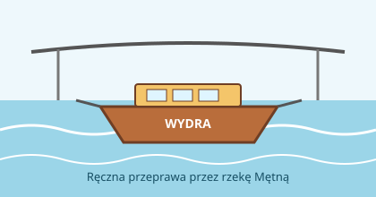

Przeprawa promowa „Wydra”
Przeprawa łączy Brzeg Górny z Kępą Łąkową przez rzekę Mętną. Ręczny prom jest ciągnięty po linie rozpiętej nad wodą, a podróż trwa około 6 minut.
Prom mieści 12 osób i 2 rowery. Nie przewozimy samochodów ani motocykli. Kursujemy od 1 maja do 30 września. Przy wysokim stanie wody przeprawa jest wstrzymana.
Aktualny stan rzeki można sprawdzić w serwisie hydrologicznym IMGW.
Nasz prom

Jak się przeprawić
- Zadzwoń dwa razy dzwonem na słupie przy kładce.
- Poczekaj, aż przewoźnik podpłynie promem i przycumuje go do brzegu.
- Wejdź na trap dopiero wtedy, gdy prom jest przycumowany.
- Po wejściu na prom postaw rower przy burcie i trzymaj go za kierownicę, a następnie usiądź na ławce.
- Po zajęciu miejsca uiść opłatę na promie, przed odbiciem od brzegu.
- Na drugim brzegu wysiądź dopiero na znak przewoźnika.
Zakazy i ważne zasady
- Nie wchodź na prom z psem bez smyczy.
- Nie stój przy linie prowadzącej.
- Nie skacz z promu do wody.
- Nie wnoś na prom szkła.
- Dzieci do lat 10 nie mogą płynąć bez opieki osoby dorosłej.
Słowniczek
- Przewoźnik
- Osoba, która prowadzi prom i odpowiada za pasażerów.
- Trap
- Pomost między brzegiem a promem.
- Lina prowadząca
- Stalowa lina nad rzeką, po której prom przesuwa się z brzegu na brzeg.
- Cumowanie
- Przywiązanie promu do brzegu.
- Kępa
- Wyspa albo kawałek lądu, który przy wysokiej wodzie bywa zalewany; od niej wzięła się nazwa wsi.
Przeczytaj regulamin przeprawy.